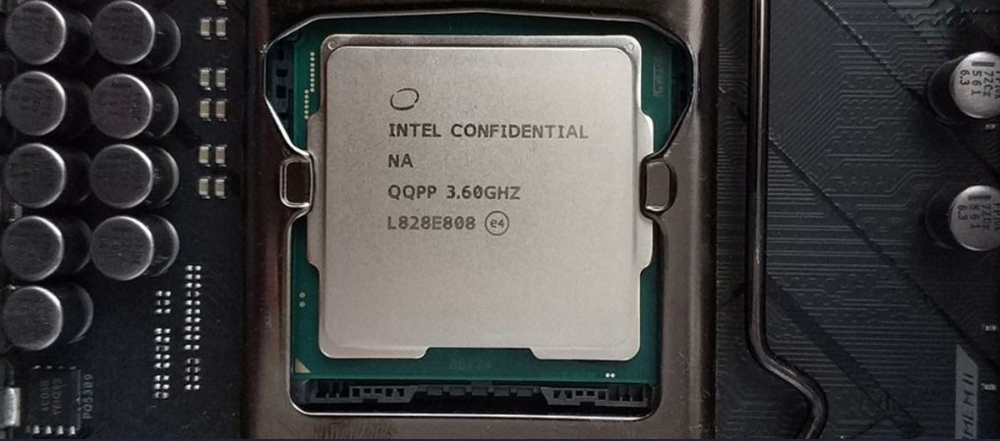
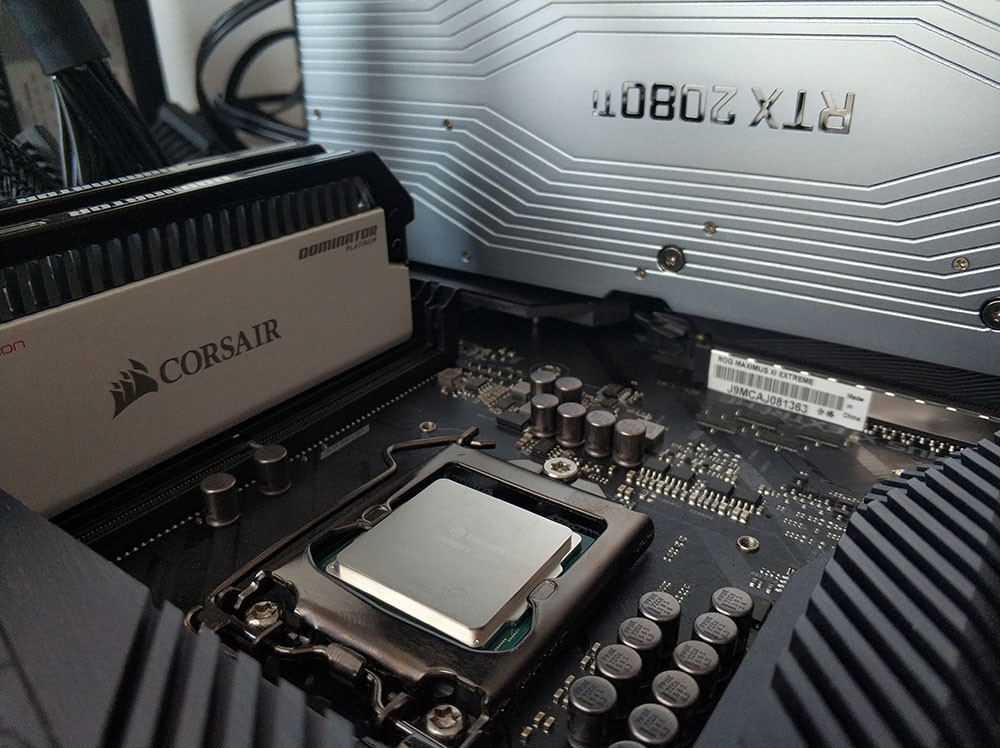

CPU: qué es, cómo es y para qué sirve

Vamos a explicarte qué es exactamente la CPU de un ordenador y para qué sirve. Se trata de un componente tremendamente complejo, no obstante es el cerebro de cada ordenador o dispositivo, pero vamos a intentar explicarlo todo de una forma lo más sencilla posible para que puedas entender los conceptos básicos de su funcionamiento.
Sobre una CPU se podría decir bastante más de lo que vamos a contarte, ya que se puede profundizar mucho en las características de su funcionamiento. Sin embargo, lo que queremos aquí es que si nunca has oído hablar de ella puedas entender sus fundamentos básicos para por lo menos saber exactamente de qué estamos hablando.
Qué es la CPU

CPU son las siglas de Central Processing Unit, lo que traducido significa Unidad Central de Procesamiento. Se trata de uno de los componentes vitales que te vas a encontrar en tu ordenador, tu smartphone o tu tableta o portátil, e incluso en relojes y prácticamente cualquier dispositivo electrónico. Sin él, simplemente no podrían funcionar.
A la CPU se la suele llamar coloquialmente como microprocesador o simplemente procesador, y puedes considerarla como el cerebro de cualquier dispositivo. Se encarga de procesar todas las instrucciones del dispositivo, leyendo las órdenes y requisitos del sistema operativo, así como las instrucciones de cada uno de los componentes y las aplicaciones.